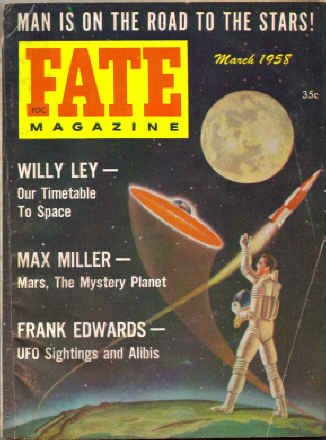

Couverture de Fate en mars, titrant
notamment sur "Observations d'ovni et Alibis" par Frank Edwards

Observation à Healdsburg (Californie)Cas Blue Book n°
5716 non résolu.
Au camp de Bouah-Mama (Algérie), dans le désert au sud de
Constantine), un légionnaire français (28 ans) en faction entend un sifflement semblant provenir du ciel. Lorsqu'il
regarde en l'air, il aperçoit un objet énorme, d'environ 300 m de diamètre, en train de descendre à environ 45 m de
lui. La chose la plus remarquable dans cet objet n'est pas sa taille mais le faisceau conique d'une lumière vert
émeraude venant de dessous et dirigé vers le sol Les souvenirs du légionnaire quant à ce qui suivit sont assez
vagues, et, comme il l'admet lui-même, peuvent ne pas correspondre à la réalité : au lieu de tirer pour alerter les
autres ou de prendre le téléphone de campagne pour appeler ses supérieurs, le jeune homme reste là à fixer l'objet
pendant plus de . Interrogé par Joël Mesnard, il déclara que les
couleurs vert pâle et émeraude étaient les couleurs les plus belles, les plus apaisantes et les plus fascinantes
que j'avais jamais vues. L'objet s'en alla de la façon la plus classique : d'abord le sifflement, puis
l'élévation à une altitude d'environ 90 m et enfin l'ascension à une vitesse vertigineuse vers le nord-ouest.
L'objet parti, l'homme recouvra sa conscience, et la sensation heureuse, d'extase, qu'il avait eue fut remplacée par
de la tristesse. C'était comme si le temps s'écoulait très lentement... c'était comme d'être dans un autre
monde déclarera-t-il plus tard. Il attrapa le téléphone et rapporta à ses supérieurs ce qu'il avait vu. Tout
d'abord, ceux-ci pensèrent qu'il s'agissait d'une hallucination due au stress ; cependant une enquête approfondie
fut menée. Les officiers se rendirent sur les lieux, les examinèrent minutieusement, sans trouver de preuve
physique, reprirent l'interrogatoire du témoin et, comme celui-ci maintenait que l'événement était réel, ils
l'envoyèrent à Paris pour un examen plus détaillé. Là, il resta une semaine en observation à l'hôpital du
Val-de-Grâce. Un électro-encéphalogramme ne révéla rien d'anormal. Les médecins conclurent qu'il était en bonne
santé mentale et physique et qu'il ne souffrait pas de façon excessive de la tension due à la guerre.
Lancement de Pamplemousse, 1er satellite équipé de panneaux solaires.